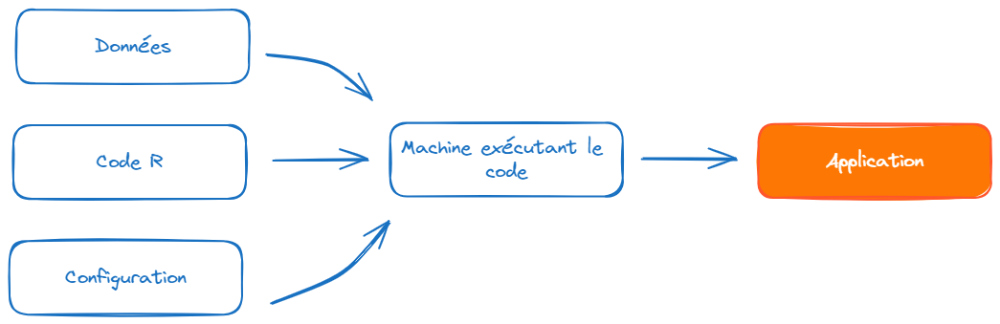
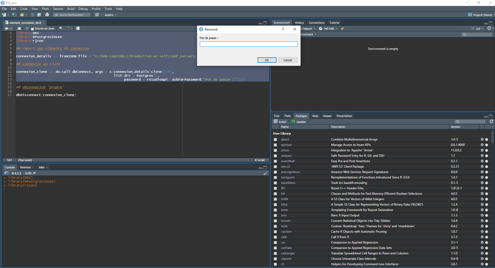

Bonnes pratiques pour les projets statistiques
Une formation aux bonnes pratiques avec Git et R
Insee
Insee
Introduction
- Version pour les manageurs de la formation aux bonnes pratiques avec
RetGit

Retour à la page d’accueil pour explorer les autres versions
Introduction
La notion de bonnes pratiques
Origine : communauté des développeurs logiciels
Constats :
- le “code est plus souvent lu qu’écrit” (Guido Van Rossum)
- la maintenance d’un code est très coûteuse
Conséquence : un ensemble de règles informelles, conventionnellement acceptées comme produisant des logiciels fiables, évolutifs et maintenables
Pourquoi s’intéresser aux bonnes pratiques ?
L’activité du statisticien / datascientist tend à se rapprocher de celle du développeur :
projets intenses en code
projets collaboratifs et de grande envergure
complexification des données et donc des infrastructures
déploiement d’applications pour valoriser les analyses
Bonnes pratiques et reproductibilité

Source : Peng R., Reproducible Research in Computational Science, Science (2011)
Une reproductibilité parfaite est coûteuse
Gitest un standard atteignable et efficient
Note
Quel socle de bonnes pratiques pour les projets statistiques en ?
Horizon de cette formation
Un point de départ commun

Horizon de cette formation
Un point de départ commun
Une structuration de projet plus viable

Vers un socle de bonnes pratiques ?
1️⃣ Qualité du code et structure des projets
2️⃣ Les formats de données de diffusion
3️⃣ Le contrôle de version
4️⃣ Normes de sécurité
5️⃣ Ouverture
Partie 1 : Qualité du code et structure des projets
Enjeux
D’une vision utilitariste du code à une vision du code comme outil de communication
Favoriser la lisibilité et la maintenabilité
Faciliter la réutilisation
Assurer la transparence méthodologique
Principes généraux
Adopter les standards communautaires
Utiliser des fonctions
Documenter son code
Indiquer les packages utilisés afin d’éviter les conflits
1️⃣ Adopter les standards communautaires
Deux outils pratiques aident à respecter les standards :
- linter : programme qui vérifie que le code est formellement conforme à un certain guidestyle
- signale problèmes formels, sans corriger
- formatter : programme qui reformate un code pour le rendre conforme à un certain guidestyle
- modifie directement le code
Note
Il existe un guide de référence pour bien coder en R : le Tidyverse style guide.
2️⃣ Favoriser la modularité des projets
- Favoriser l’utilisation de fonctions
- Limite les risques d’erreur liés aux copier/coller
- Rend le code plus lisible et plus compact
- Unicité de la source de vérité
- Les packages
- Idéal pour favoriser la réutilisation du code
- Coût de maintenance élevé
3️⃣ Documenter son code
- Grands principes :
- Documenter le pourquoi plutôt que le comment
- Privilégier l’auto-documentation via des nommages pertinents
- Documenter le projet (contexte, objectifs, fonctionnement) dans un fichier
README- Quelques modèles : utilitR, DoReMIFaSol
Partie 2: les formats de données
Enjeux
- Le choix d’un format de données répond à un arbitrage entre plusieurs critères :
- Finalité (traitement, analyse, diffusion)
- Public cible
- Volumétrie
Recommandations
Eviter impérativement les formats de données adhérents à un langage (
RDS,RData,fst,sas7bdat, etc.).Deux formats à privilégier :
- CSV : pour la plupart des usages courants
- Avantage : non-compressé donc facilement lisible
- Inconvénients : pas de gestion des méta-données, peu adapté aux données volumineuses
- Parquet : pour le traitement de données volumineuses
- Compressé et très performant en lecture/écriture
- Gestion native des méta-données
- CSV : pour la plupart des usages courants
Partie 3 : Le contrôle de version
1️⃣ Archiver son code proprement
pour en finir avec ça :

1️⃣ Archiver son code proprement
ou ça :

1️⃣ Archiver son code proprement
ou encore ça :
prior <- read_csv(prior_path)
prior <- prior %>%
select(id, proba_inter, proba_build, proba_rfl) %>%
separate(id, into = c('nidt', 'grid_id'), sep = ":") %>%
group_by(nidt) %>%
mutate(
proba_build = proba_build/sum(proba_build),
proba_rfl = proba_rfl/sum(proba_rfl),
) %>%
unite(col = "id", nidt, grid_id, sep = ":")
# Test
# prior_test <- prior %>%
# mutate(
# proba_inter = round(proba_inter, 4)
# proba_build = round(proba_build, 4)
# proba_rfl = round(proba_rfl, 4)
# )
write_csv(prior_round, "~/prior.csv")1️⃣ Archiver son code proprement
Pour arriver à ça :

Source : ThinkR
2️⃣ Voyager dans le temps (de votre projet)

Concepts
Git, GitHub, GitLab… quelles différences ?
Gitest un logiciel ;- Utilisation en ligne de commandes
- Différentes interfaces graphiques (
RStudio,VS Code…)
Concepts
Git, GitHub, GitLab… quelles différences ?
GitHubetGitLabsont des forges logicielles- Forge: espace d’archivage de code
- Des fonctionalités supplémentaires : réseau social du code
Astuce
GitHub: utilisation pour les projets open-sourceGitLab: utilisation pour les projets internes
Bonnes pratiques
Que versionne-t-on ?
- Essentiellement du code source
- Pas d’outputs (fichiers
.html,.pdf, modèles…) - Pas de données, d’informations locales ou sensibles
Note
Pour définir des règles qui évitent de committer tel ou tel fichier, on utilise un fichier nommé .gitignore.
Si on mélange du code et des éléments annexes (output, données…) dans un même dossier, il faut consacrer du temps à ce fichier.
Des modèles de .gitignore existent sur internet, par exemple celui-ci pour les projets .
N’hésitez pas à y ajouter des règles conservatrices (par exemple *.csv), comme cela est expliqué dans la documentation utilitR.
Bonnes pratiques
Format des commits
- Fréquence
- Aussi souvent que possible
- Le lot de modifications doit “avoir du sens”
- Messages
- Courts et informatifs (comme un titre de mail)
- Décrire le pourquoi plutôt que le comment dans le texte

Ouverture vers la partie 4
Nous nous sommes concentrés sur les briques:
- “Code R”
- “Données”
- Mais besoin d’aller plus loin:
- “Code R” : besoin d’un environnement standardisé (
renv) - “Données”: enjeu de localisation (réseau, cloud, etc)
- “Configuration”: enjeu de la sécurité
- “Code R” : besoin d’un environnement standardisé (
L’élaboration d’une statistique
Le cas d’usage classique à l’Insee
Il faut distinguer deux types de processus de production :
celui qui est entièrement automatisé, et où l’intervention humaine est limitée ;
celui qui nécessite du travail humain postérieur de la part du statisticien, et donc fait l’objet de tâtonnements
- calcul du taux de pauvreté avec ERFS et SRCV ;
- micro-simulation avec le modèle INES ;
- des processus de suivi conjoncturels…
Pourquoi Git répond-il bien aux enjeux de la production ?
Exemple avec calcul du taux de pauvreté dans SRCV
Les tâtonnements supposent des allers et retours sur différentes hypothèses :
- prise en compte évolutive des phénomènes affectant l’indicateur (défiscalisation de revenus, nouvelles prestations sociales, etc.) ;
- production de différentes variantes que l’on veut pouvoir comparer les unes aux autres ;
- comprendre ce qui a été fait pour les précédentes productions, éventuellement qui a fait quoi.
Quels concepts ?
les variantes peuvent se décliner sous la notion de branches ;
en traçant l’ensemble des modifications du code,
Gitfacilite la complète reproductibilité des tâtonnements ;au travers de l’historique, il permet de retracer l’ensemble du cheminement ;
le
git blamepermet de voir qui a fait quoi ;mais cela nécessite une discipline sur l’usage de
Git.
⇒ deux notions essentielles : reproductibilité et traçabilité
Gestion du cycle de vie d’un projet
Changement de paradigme : le code self doit être maintenu
- Changement de version de
Ret des packages ; - Quelles solutions connaissez-vous ?
- Changement de version de
renvet la notion de lockfileanticiper les montées de version des logiciels :
- on peut envisager un protocole pour cela
Gestion du cycle de vie d’un projet: renv
Exemple de renv.lock
Observer la composition de ce fichier (100 premières lignes)
renv.lock
{
"R": {
"Version": "4.3.3",
"Repositories": [
{
"Name": "CRAN",
"URL": "https://packagemanager.posit.co/cran/latest"
}
]
},
"Packages": {
"BH": {
"Package": "BH",
"Version": "1.84.0-0",
"Source": "Repository",
"Repository": "CRAN",
"Hash": "a8235afbcd6316e6e91433ea47661013"
},
"DBI": {
"Package": "DBI",
"Version": "1.2.2",
"Source": "Repository",
"Repository": "CRAN",
"Requirements": [
"R",
"methods"
],
"Hash": "164809cd72e1d5160b4cb3aa57f510fe"
},
"DT": {
"Package": "DT",
"Version": "0.33",
"Source": "Repository",
"Repository": "RSPM",
"Requirements": [
"crosstalk",
"htmltools",
"htmlwidgets",
"httpuv",
"jquerylib",
"jsonlite",
"magrittr",
"promises"
],
"Hash": "64ff3427f559ce3f2597a4fe13255cb6"
},
"KernSmooth": {
"Package": "KernSmooth",
"Version": "2.23-22",
"Source": "Repository",
"Repository": "CRAN",
"Requirements": [
"R",
"stats"
],
"Hash": "2fecebc3047322fa5930f74fae5de70f"
},
"MASS": {
"Package": "MASS",
"Version": "7.3-60.0.1",
"Source": "Repository",
"Repository": "CRAN",
"Requirements": [
"R",
"grDevices",
"graphics",
"methods",
"stats",
"utils"
],
"Hash": "b765b28387acc8ec9e9c1530713cb19c"
},
"Matrix": {
"Package": "Matrix",
"Version": "1.6-5",
"Source": "Repository",
"Repository": "CRAN",
"Requirements": [
"R",
"grDevices",
"graphics",
"grid",
"lattice",
"methods",
"stats",
"utils"
],
"Hash": "8c7115cd3a0e048bda2a7cd110549f7a"
},
"R6": {
"Package": "R6",
"Version": "2.5.1",
"Source": "Repository",
"Repository": "RSPM",
"Requirements": [
"R"
],
"Hash": "470851b6d5d0ac559e9d01bb352b4021"
},
"RColorBrewer": {Gestion du cycle de vie d’un projet
- Gérer le cycle de vie:
- du code
- de son environnement d’exécution
- des données mobilisées en entrée du projet et produites de manière intermédiaire.
- Définir responsabilités et organisation à la fois :
- sur la maintenance du code ;
- sur gitlab.insee.fr.
Partie 4: Enjeux de sécurité
Question
Question
Quels sont, selon vous, les principaux risques de sécurité liés au développement en self ?
Risques 👮
- Mot de passe et jetons d’accès à des API
pas de mot de passe ni de jeton d’accès écrits dans le code - Risques sur les données :
- pas de données dans
Git - pas de compte d’accès commun à des bases de données
- pas de données sensibles en dehors des environnements protégés
- pas de données dans
Jetons d’accès à des API
- une solution à préférer au mot de passe (quand disponible)
- gestion fine des droits
- possibilité de révocation des jetons
- peuvent être limités dans le temps
- mais qui présentent des risques identiques aux mots de passe si les jetons ont des droits élevés
Les solutions concrètes pour les mots de passe
Notion de boîte de dialogue qui permet d’entrer le mot de passe sans l’inscrire dans le code
library(DBI)
library(RPostgresInsee)
library(rjson)
## import des éléments de connexion
connexion_details <- fromJSON(file = "X:/HAB-LOGFIDELI/Production en self/conf_servers_fideli.json")
## connexion au clone
connexion_clone <- do.call(dbConnect, args = c(connexion_details$clone[2:4],
list(drv = Postgres(),
password = rstudioapi::askForPassword("Mot de passe :"))))Résultat : un prompt qui récupère le mot de passe
A utiliser avec un gestionnaire de mots de passe
KeePass :
- disponible dans le centre logiciel
- simple d’utilisation
- les mots de passe sont stockés dans un fichier
.kdbxchiffré - les fichiers
.kdbxsont protégés par un mot de passe maître - une aide à la génération de mots de passe forts
Droits d’accès aux données
- ne pas utiliser de compte générique pour accéder à des bases de données :
- ne répond pas aux exigences de traçabilité
- ne répond pas aux exigences de révocation des droits d’accès
- préférer :
- des comptes individuels
- associés à une revue annuelle des droits
Stockage des données
- Données sous forme de fichier :
- ne pas les mettre sous
Git(utiliser le fichier.gitignore) - veiller à ce que les données sensibles ne prolifèrent pas.
- ne pas les mettre sous
- Données dans des bases de données :
- toujours se poser la question de l’opportunité de les dupliquer sous forme de fichier
On préférera toujours avoir des données stockées dans un unique espace pour lequel les droits d’accès sont gérés individuellement.
Partie 5: Collaboration et ouverture
Quelques questions pour commencer
- Pour limiter les risques de sécurité, vaut-il mieux cacher son code à ses collègues ?
- Quelle est la nature juridique des codes sources réalisés à l’Insee ?
R,Pythonet leurs packages sont gratuits, comment est-ce possible ?- Connaissez-vous la science ouverte et ses standards ?
La sécurité par l’obscurité
- Postulat : si on conserve ses codes sources secrets alors les failles de sécurité seront plus difficiles à détecter
- Ce postulat s’est avéré faux :
- des failles de sécurité sont en permanence détectées dans des logiciels propriétaires
- cela revient à cacher la fiabilité réelle des processus mis en oeuvre
- les logiciels open source sont examinés par de très nombreuses personnes et corrigés en cas de problème
Nature juridique des codes sources
- Les codes sources achevés (qui servent en production) ont le statut de document administratif
- Ils peuvent faire l’objet de demandes d’accès
- En cas d’accès, la publication doit se faire en open source
- Plutôt que de vérifier en catastrophe s’il y a des problèmes, autant s’y préparer au fur et à mesure
Différents niveaux d’ouverture possibles
- On peut déjà ouvrir les codes en interne au sein de l’Insee :
- meilleure compréhension mutuelle des travaux
- associé à GitLab, un cadre idéal pour la collaboration et la mutualisation
Différents niveaux d’ouverture possibles
- Au-delà, la publication de certains projets en open source permet de valoriser le savoir-faire de l’Insee :
- Packages
R:disaggR,btb,RJDemetra… - Eurostat systématise l’open source pour les travaux européens
- une nécessité pour ne pas passer pour un passager clandestin vis-à-vis des communautés open source
- un moyen d’assurer la transparence de nos méthodes (cf. code des bonnes pratiques et les standards de la science ouverte)
- Packages
L’ensemble des bonnes pratiques qui ont été présentées sont issues de l’open source.
Bonnes pratiques pour les projets statistiques (retour au site principal ; )